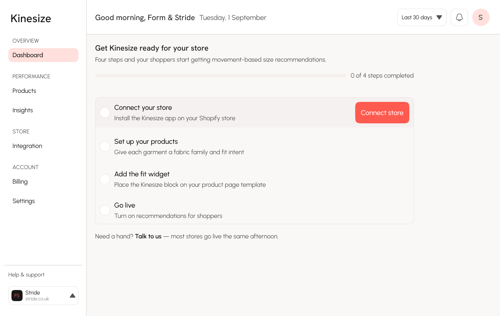
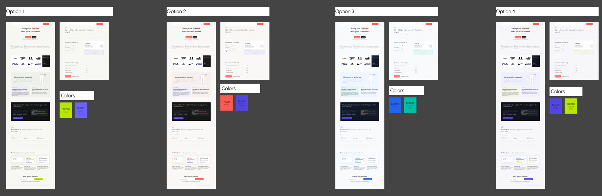

Kinesize
A merchant dashboard that turns sizing data into decisions. Movement-based size recommendations for sportswear stores, designed end to end to developer handoff.
- Role
- Product designer, end to end: research, flows, UI, design system, handoff
- Client
- Hire My Idea confirm how you want the company described
- Timeline
- e.g. 6 weeks, Feb–Mar 2026. Take from Figma version history
- Team
- e.g. founder, 1 developer, me
- Surfaces
- Merchant web dashboard, Shopify fit widget, marketing site
- Status
- Marketing site approved by the client with no revisions. Dashboard and widget designed to dev-ready. Dropped before build when the company wound down.

01The problem
Sportswear is returned for size more than almost any other category. A size chart tells a shopper their chest measurement maps to a Medium, but it says nothing about how a compression legging behaves differently from a relaxed training short, or how a knit stretches across a body in motion. Shoppers guess, order two sizes, and send one back. Merchants absorb the cost.
Kinesize is a Shopify app that recommends a size from how a garment is meant to move. The shopper does a short movement capture on their phone. Pose is processed on the device, never uploaded, which is what makes the product GDPR-native rather than GDPR-patched. Those movement features are matched against how each garment's fabric behaves, by fabric family and fit intent, to land on a size.
Merchants pay 50p plus 1.5% of the item price, only on orders the customer keeps. No install fee, no subscription. The pricing ties the product to the one number the merchant cares about: fewer size-related returns.
I was brought in to design the whole product surface: the merchant dashboard where stores set up and monitor Kinesize, the fit widget that sits on their product pages, and the marketing site that sells it to them.
![Kinesize product map and site structure: branches for Problem (fit returns dominate apparel, static charts miss movement), How it works (on-device pose capture, movement features, fabric behaviour per item), Pricing (50p plus 1.5% of price, only on kept orders, no install or subscription), Moat (outcome-labelled dataset, fabric library by family, GDPR-native by design) and Market (UK Shopify activewear, Europe and US next, default sizing layer), beside a website sitemap of Home, How it works, Pricing, Privacy, Result, Docs and Company](work/kinesize/product-map.png)
02What I designed
Three surfaces, one system. The dashboard carried most of the complexity, so that's where the rest of this case study focuses.
Merchant dashboard
- Authentication: login, create account, forgot password, expired link, team invite
- Four-step setup: connect store, set up products, add the fit widget, go live
- Dashboard in pre-live and live states
- Products, insights, store integration, billing, settings, help
- Empty, error and success states for every module
Fit widget
- The block merchants place on their product page template
- Shopper-facing sizing flow and recommendation result
- Designed to sit inside any Shopify theme without fighting it
Marketing site
- Seven pages: Home, How it works, Pricing, Privacy, Result, Docs, Company
- Pricing calculator for the per-kept-order model
- Four colour directions explored before committing
- Approved by the client with no revisions
03Decision one: setup is a checklist, not a wizard
Getting Kinesize live means four jobs that don't happen in one sitting or always by one person. Connecting the store is a Shopify install. Setting up products means giving each garment a fabric family and fit intent, which a merchandiser might own. Adding the fit widget means editing the theme, which often lands on a developer. Going live is a switch the owner wants to flip themselves.
A linear wizard would have forced all of that into one session and blocked everything behind the step that needed someone else. So setup became a persistent checklist on the dashboard home: a progress bar, four steps with a one-line explanation of what each one actually involves, and each step opening its own short flow and returning to the list. The merchant can leave at step two and come back a day later without losing their place.
The dashboard also has a distinct state for "set up but not yet live", so a merchant who has done the work but hasn't flipped the switch isn't shown an empty analytics page that looks broken.
Rejected: a full-screen stepper. It demos well and looks tidy, but it assumes one person with every permission finishing in one go. add anything the founder or developer said here

04Decision two: the dashboard answers "what do I do", not "how is it going"
The first dashboard layout I explored was chart-first: a big activity graph, then tables. It looked like analytics and told the merchant nothing they could act on. A store owner opening Kinesize on a Tuesday morning has one question: is anything wrong, and which product?
The final layout leads with four numbers that matter (recommendations made, completion rate, size-related returns, most recommended size), each with its change against the previous period. Directly below sits a dark "What needs your attention" panel: a short list of signals per product. High returns on one size. A size growing in recommendations. A product performing consistently. Each one links straight to that product.
Only after that do the charts appear: recommendation activity over time, the distribution of recommended sizes, and a product table with a plain-language status of Good or Watch. The merchant can go deep, but they don't have to in order to get value.
The detail I'd defend hardest: the signal panel is dark on a light page. It is the one place where the dashboard is telling the merchant something rather than showing them data, and it should feel different.
05Decision three: products are the unit of work, and fabric is a first-class field
Most sizing tools treat a product as a size chart. Kinesize treats it as a garment with a fabric family (how it stretches and recovers) and a fit intent (compression, fitted, regular, relaxed). Those two fields are what make the recommendation meaningfully different from a measurement lookup, so the product setup flow had to make them quick to assign and hard to get wrong.
I designed product setup around the merchant's own catalogue: a list they recognise, with fabric family and fit intent added inline, bulk-editable where products share construction. Every insight downstream, from the attention panel to the product table, keys off the product, so a merchant always lands somewhere they can take action.
This is where the textile background earned its place. I pushed for fabric family to be a required field rather than an optional refinement, because a compression knit and a woven short in the same size label behave nothing alike on a body. confirm this is accurate to how the conversation went, or adjust
06Craft and system
Three things that don't show up in a hero screenshot but mattered for handoff.
- States before polish. Every module got its empty, error and success state designed before high-fidelity visuals, so the developer never had to invent one.
- One design system across three surfaces. The dashboard, widget and marketing site share type, colour, spacing and components, so the widget looks like it belongs to the product the merchant set up.
- Colour was a decision, not a default. I explored four colour directions for the marketing site side by side and carried the chosen coral into the dashboard as the single action colour. Everything else stays neutral so the signals read. confirm which option was chosen and why

07Outcome
The marketing site was reviewed and approved by the client without a single revision request. The dashboard and fit widget reached dev-ready, with annotated handoff pages and a prototype of the setup-to-live flow. The project was then dropped as the company wound down, before anything was built.
So there are no live metrics. If it had shipped, these are the numbers I'd have watched first:
- Setup completion rate and time to go live. The checklist exists to get this number up. The landing page promises most stores go live the same afternoon.
- Recommendation completion rate. How many shoppers who open the widget finish it. If this is low, the widget is asking too much.
- Size-related return rate per product. The only metric that pays for the product, and the one the attention panel is built around.
What I'd do next
- Usability-test the four-step setup with five merchants who run their own Shopify store, especially the theme edit step.
- Validate the attention panel thresholds against real return data. Right now "high returns" is a design assumption, not a calibrated number.
- Design the merchandiser view: a bulk fabric-and-fit editor for stores with hundreds of SKUs.